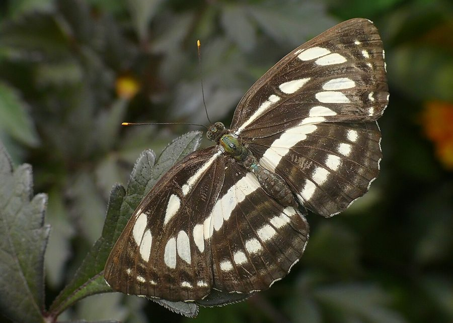

कॉमन सेलर तितलीCommon Sailer
Neptis hylas · Nymphalidae · INS-0073

- Scientific nameवैज्ञानिक नाम
- Neptis hylas (Linnaeus, 1758)
- Familyकुल
- Nymphalidae
- Hindiहिंदी
- कॉमन सेलर तितली
- Local namesस्थानीय नाम
- common sailer, sailer titli, kali safed titli, dhariwali titli
- Status hereयहाँ की स्थिति
- native
- Movementआवागमन
- Resident, here all year
- IUCNIUCN
- not evaluated
- Reviewसमीक्षा
- audited and independently read
When to look कब देखें
Present all year.साल भर मौजूद।
Uses and possibilities उपयोग और संभावनाएँ
Drawn from the documented uses in the profile below, where each is labelled traditional, current or a research lead. All uses →
साधारण मल्लाह / Common Sailer
Neptis hylas (Linnaeus, 1758) — Nymphalidae
साधारण मल्लाह — पूर्वी उत्तर प्रदेश के जंगलों की किनारों, खेतों और घास की जगहों में पाई जाने वाली एक मध्यम आकार की काली और सफ़ेद तितली है। इसके पंखों का रंग गहरा काला होता है जिन पर सफ़ेद धब्बों की धारियाँ होती हैं, जो इसे "मल्लाह" (sailer) का नाम देते हैं क्योंकि सफ़ेद धब्बे जहाज़ के नमूने की तरह दिखते हैं। यह तितली घास परिवार की पत्तियों खाती है। इसकी उड़ान तेज़ और जिग-ज़ैग होती है, और यह सूरज की धूप में सक्रिय होती है।
Quick Identification त्वरित पहचान
| Feature | Description |
|---|---|
| Size | Medium-sized butterfly; body length 22–26 mm; wingspan 60–75 mm |
| Coloration | Deep black or dark brown wings with white striped bands |
| Forewing | Contains 2–3 irregular white spots or bands crossing the wing |
| Hindwing | Has a row of small white spots along the outer margin |
| Flight | Swift, erratic, zigzag flight; males patrol rapidly |
| Behaviour | Males are territorial; perch on low twigs and rapidly pursue other butterflies |
Field tip: Look for a small to medium-sized black butterfly with white markings flying swiftly over grasslands and field margins. The distinctive white striping on dark wings, combined with the rapid, erratic flight, identifies the Common Sailer.
Morphology आकारिकी
Biometrics (typical measurements for adults in northern Indian plains):
| Measurement | Range |
|---|---|
| Body length | 22–26 mm |
| Wingspan | 60–75 mm |
| Forewing length | 28–35 mm |
Body: Slender, dark brown or black, with white spots on head and thorax.
Wings:
- Dorsal (upper) surface: Both wings are predominantly black or very dark brown. The forewing contains 2–3 irregular white spots or transverse bands. The hindwing has a row of distinct white spots along the outer edge and sometimes a white discal patch.
- Ventral (lower) surface: Similar pattern but paler, with white markings more prominently visible when wings are folded at rest.
Sexual Dimorphism: Males are more vividly marked than females, which are slightly larger and duller.
Behaviour & Ecology व्यवहार और पारिस्थितिकी
Territorial and rapidly flying grassland species. The Common Sailer is a fast, erratic flyer that spends much time in rapid patrols of grass-dominated habitats. Males perch on low grass stems and twigs, and rapidly pursue intruders and potential mates. The species is territorial, and males engage in mid-air chases with other butterflies. They are attracted to damp earth and mud-puddle in small groups.
Grass specialist. The caterpillar feeds on various grass species, making this butterfly a generalist compared to other Neptis species that feed on specific plants.
Life Cycle / Phenology जीवन चक्र
| Stage / Season | Event |
|---|---|
| Egg | Laid singly or in small groups on grass stems; pale yellow; hatch in 4–6 days |
| Larval (Caterpillar) | 4–5 instars; mature caterpillar 20–24 mm long; green with pale stripes; development 14–18 days |
| Pupa | Hanging chrysalis; pale green or brown; emerges in 8–12 days |
| Adult | Emerges March to November; peak abundance May to October; lifespan 2–3 weeks |
Host Plants or Prey आहार
Larval host plants:
- Various grass species: Paspalum, Echinochloa, and other common agricultural and wild grasses.
Adult nectar sources:
- Low flowering herbs, Lantana camara (Indian Lantana), and wild composites.
Predators / Natural Enemies शत्रु
- Birds: Insectivorous birds and dragonflies in open habitats.
- Spiders: Grass spiders and jumping spiders.
- Parasitoid Wasps: Small wasps parasitize caterpillars.
Agricultural / Human Relevance कृषि प्रासंगिकता
Indicator species. The Common Sailer's abundance in grasslands indicates healthy, grass-dominated vegetation and is an indicator of habitat quality.
Pollinator. Although not a major pollinator compared to other species, it visits flowers and contributes to pollination services.
Expected Locally स्थानीय रूप से अपेक्षित
Not a field record. Written from published accounts for eastern Uttar Pradesh. No confirmed local sighting yet — if you have seen it, that is what the atlas needs.
अभी तक स्थानीय पुष्टि नहीं। यह विवरण प्रकाशित स्रोतों से है, किसी अवलोकन से नहीं।
To be expected in Basti district in open grasslands, field margins, and forest clearings. Look for swift, black-and-white butterflies flying low over grass in sunny areas. Check grass stems for green caterpillars. The first local record would be a photograph with place and date; send it to the atlas contact on the About page.
Distribution वितरण
Global range: Widespread across Asia, from India through Southeast Asia to Japan.
In India: Distributed throughout the peninsula and the Gangetic plain.
In Uttar Pradesh: Common resident in all agricultural and grassland districts.
In Basti district / eastern UP: Expected in all grass-dominated habitats.
Research Questions शोध प्रश्न
Anyone can investigate these | कोई भी इन प्रश्नों की जाँच कर सकता है
- Which grass species do Common Sailer caterpillars prefer in Basti fields? — Survey and record caterpillars on different grasses.
- How many generations does the Common Sailer produce in one year in Basti? — Track emergence timing throughout the season.
- What is the ratio of territorial interactions to successful matings in male Common Sailers? — Observe marked individuals.
- Do Common Sailers show preferences for particular grass types or field conditions? / क्या साधारण मल्लाह विशेष तरह की घास या खेत की जगह को पसंद करती है? — Compare abundance across different habitat types.
- How far do Common Sailers disperse from their emergence site? — Mark and recapture individuals.
Similar Species मिलती-जुलती प्रजातियाँ
| Species | How to tell apart | हिंदी |
|---|---|---|
| Great Sailer (Neptis vikrama) | Larger; more extensive white markings; broader wing shape | बड़ी मल्लाह — बड़ा, ज़्यादा सफ़ेद |
| Common Sailor's Relative (Neptis nata) | Smaller spots and bands; slightly different arrangement of markings | छोटी मल्लाह — छोटे दाग़े |
Field rule: A medium-sized black butterfly with white spots or bands on the wings and swift, low, erratic flight over grasslands is the Common Sailer.
Taxonomy & Classification वर्गीकरण
Original description. Linnaeus described the Common Sailer as Papilio hylas in 1758 in Systema Naturae, 10th edition. The type locality is Asia. The genus Neptis was later established for these grass-feeding sailer butterflies.
Subspecies. The nominate subspecies N. h. hylas occurs throughout the Indian subcontinent.
Family and order placement. Order Lepidoptera, family Nymphalidae, subfamily Nymphalinae.
Phylogenetic notes. Neptis is a genus of swift-flying Asian nymphalids, closely related to other grassland-specialized butterflies.
IUCN status rationale. Not evaluated. Common and widespread, under no conservation threat.
Photo Gallery फोटो गैलरी
No photos yet — add field photos to media/species/common_sailer/ and run node scripts/sync_photos.js.
Photos needed आवश्यक फोटो
- [ ] Adult on grass stem (घास पर)
- [ ] Adult in flight (उड़ान में)
- [ ] Caterpillar on host grass (इल्ली)
References संदर्भ
- Linnaeus, C. (1758). Systema Naturae per regna tria naturae, 10th ed. Laurentii Salvii, Holmiae.
- Bingham, C.T. (1905). The Fauna of British India, including Ceylon and Burma. Butterflies. Vol. 1. Taylor & Francis, London.
- Kehimkar, I. (2008). The Book of Indian Butterflies. Bombay Natural History Society, Mumbai.
- Kunte, K. (2000). Butterflies of Peninsular India. Universities Press, Hyderabad.
- Zoological Survey of India (2010). Fauna of Eastern Uttar Pradesh.
- GBIF Occurrence Data — Neptis hylas, Uttar Pradesh (2010–2025).
Source file: species/fauna/insects/common_sailer.md